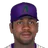

Franchise record book · MLB
Arizona Diamondbacks
Seasons covered: 1998–2002. Only games played for this franchise count.
Read this first: seasons 1871–2001 are real MLB history that shipped with the OOTP file, mapped by OOTP onto this universe's 30 original franchises (club names as they were that season). 2002 is this universe, season to date (top tiers: MLB, ABL, FBL). Player names are as the export stores them; OOTP gives some historical players generated names.
Home runs
Hits
| # | Player | Season | Team | Hits |
|---|---|---|---|---|
| #1 | 1999 |  Arizona Diamondbacks Arizona Diamondbacks | 206 | |
| #2 | 2001 | Arizona Diamondbacks | 198 | |
| #3 | 2000 | Arizona Diamondbacks | 192 | |
| #4 | 1999 | Arizona Diamondbacks | 190 | |
| #5 | 1999 | Arizona Diamondbacks | 170 | |
| #6 | Jay Bell • | 1999 | Arizona Diamondbacks | 170 |
| #7 | 2000 | Arizona Diamondbacks | 167 | |
| #8 | 1998 | Arizona Diamondbacks | 157 | |
| #9 | 1999 | Arizona Diamondbacks | 156 | |
| #10 | 2000 | Arizona Diamondbacks | 151 |
RBI
Runs
| # | Player | Season | Team | Runs |
|---|---|---|---|---|
| #1 | Jay Bell • | 1999 | Arizona Diamondbacks | 132 |
| #2 | 2001 | Arizona Diamondbacks | 128 | |
| #3 | 1999 | Arizona Diamondbacks | 112 | |
| #4 | 1999 | Arizona Diamondbacks | 111 | |
| #5 | 2000 | Arizona Diamondbacks | 106 | |
| #6 | 1999 | Arizona Diamondbacks | 100 | |
| #7 | 2000 | Arizona Diamondbacks | 100 | |
| #8 | 1999 | Arizona Diamondbacks | 98 | |
| #9 | 2000 | Arizona Diamondbacks | 95 | |
| #10 | Jay Bell • | 2000 | Arizona Diamondbacks | 87 |
Stolen bases
Doubles
Triples
Walks
Total bases
| # | Player | Season | Team | Total bases |
|---|---|---|---|---|
| #1 | 2001 | Arizona Diamondbacks | 419 | |
| #2 | 1999 | Arizona Diamondbacks | 337 | |
| #3 | 1999 | Arizona Diamondbacks | 336 | |
| #4 | 2000 | Arizona Diamondbacks | 336 | |
| #5 | Jay Bell • | 1999 | Arizona Diamondbacks | 328 |
| #6 | 1999 | Arizona Diamondbacks | 310 | |
| #7 | 2000 | Arizona Diamondbacks | 293 | |
| #8 | 1998 | Arizona Diamondbacks | 257 | |
| #9 | Jay Bell • | 2000 | Arizona Diamondbacks | 247 |
| #10 | 2001 | Arizona Diamondbacks | 242 |
Batting average qualified
| # | Player | Season | Team | Batting average |
|---|---|---|---|---|
| #1 | 2002 (MLB) | Arizona Diamondbacks | .345 | |
| #2 | 1999 | Arizona Diamondbacks | .336 | |
| #3 | 2001 | Arizona Diamondbacks | .325 | |
| #4 | 2000 | Arizona Diamondbacks | .311 | |
| #5 | 1999 | Arizona Diamondbacks | .303 | |
| #6 | 2001 | Arizona Diamondbacks | .298 | |
| #7 | Jay Bell • | 1999 | Arizona Diamondbacks | .289 |
| #8 | 2000 | Arizona Diamondbacks | .280 | |
| #9 | 1998 | Arizona Diamondbacks | .279 | |
| #10 | 1998 | Arizona Diamondbacks | .277 |
On-base % qualified
| # | Player | Season | Team | On-base % |
|---|---|---|---|---|
| #1 | 2001 | Arizona Diamondbacks | .429 | |
| #2 | 1999 | Arizona Diamondbacks | .403 | |
| #3 | 2002 (MLB) | Arizona Diamondbacks | .392 | |
| #4 | 2000 | Arizona Diamondbacks | .392 | |
| #5 | 2001 | Arizona Diamondbacks | .386 | |
| #6 | Jay Bell • | 1999 | Arizona Diamondbacks | .374 |
| #7 | 2002 (MLB) | Arizona Diamondbacks | .371 | |
| #8 | 2000 | Arizona Diamondbacks | .361 | |
| #9 | 2001 | Arizona Diamondbacks | .359 | |
| #10 | 1998 | Arizona Diamondbacks | .355 |
Slugging % qualified
| # | Player | Season | Team | Slugging % |
|---|---|---|---|---|
| #1 | 2001 | Arizona Diamondbacks | .688 | |
| #2 | Jay Bell • | 1999 | Arizona Diamondbacks | .557 |
| #3 | 1999 | Arizona Diamondbacks | .549 | |
| #4 | 2000 | Arizona Diamondbacks | .544 | |
| #5 | 2000 | Arizona Diamondbacks | .544 | |
| #6 | 1999 | Arizona Diamondbacks | .536 | |
| #7 | 1999 | Arizona Diamondbacks | .525 | |
| #8 | 2002 (MLB) | Arizona Diamondbacks | .482 | |
| #9 | Todd Hundley • | 2002 (MLB) | Arizona Diamondbacks | .481 |
| #10 | 2001 | Arizona Diamondbacks | .466 |
OPS qualified
| # | Player | Season | Team | OPS |
|---|---|---|---|---|
| #1 | 2001 | Arizona Diamondbacks | 1.117 | |
| #2 | 1999 | Arizona Diamondbacks | .952 | |
| #3 | 2000 | Arizona Diamondbacks | .935 | |
| #4 | Jay Bell • | 1999 | Arizona Diamondbacks | .931 |
| #5 | 2000 | Arizona Diamondbacks | .904 | |
| #6 | 1999 | Arizona Diamondbacks | .880 | |
| #7 | 2002 (MLB) | Arizona Diamondbacks | .874 | |
| #8 | 1999 | Arizona Diamondbacks | .861 | |
| #9 | 2001 | Arizona Diamondbacks | .852 | |
| #10 | Todd Hundley • | 2002 (MLB) | Arizona Diamondbacks | .812 |
WAR (OOTP)
| # | Player | Season | Team | WAR (OOTP) |
|---|---|---|---|---|
| #1 | 2001 | Arizona Diamondbacks | 9.0 | |
| #2 | 1999 | Arizona Diamondbacks | 5.7 | |
| #3 | Jay Bell • | 1999 | Arizona Diamondbacks | 5.3 |
| #4 | 2000 | Arizona Diamondbacks | 5.2 | |
| #5 | 2000 | Arizona Diamondbacks | 4.0 | |
| #6 | 1999 | Arizona Diamondbacks | 3.7 | |
| #7 | Jay Bell • | 1998 | Arizona Diamondbacks | 3.5 |
| #8 | 2001 | Arizona Diamondbacks | 3.4 | |
| #9 | 1999 | Arizona Diamondbacks | 3.4 | |
| #10 | 1998 | Arizona Diamondbacks | 3.2 |
Wins
Strikeouts
| # | Player | Season | Team | Strikeouts |
|---|---|---|---|---|
| #1 | 2001 | Arizona Diamondbacks | 372 | |
| #2 | 1999 | Arizona Diamondbacks | 364 | |
| #3 | 2000 | Arizona Diamondbacks | 347 | |
| #4 | 2001 | Arizona Diamondbacks | 293 | |
| #5 | 1998 | Arizona Diamondbacks | 164 | |
| #6 | 1999 | Arizona Diamondbacks | 148 | |
| #7 | 1999 | Arizona Diamondbacks | 141 | |
| #8 | 1998 | Arizona Diamondbacks | 132 | |
| #9 | 2001 | Arizona Diamondbacks | 113 | |
| #10 | 2000 | Arizona Diamondbacks | 111 |
Saves
Innings
| # | Player | Season | Team | Innings |
|---|---|---|---|---|
| #1 | 1999 | Arizona Diamondbacks | 271.2 | |
| #2 | 2001 | Arizona Diamondbacks | 256.2 | |
| #3 | 2001 | Arizona Diamondbacks | 249.2 | |
| #4 | 2000 | Arizona Diamondbacks | 248.2 | |
| #5 | 1998 | Arizona Diamondbacks | 231.1 | |
| #6 | 1999 | Arizona Diamondbacks | 214.2 | |
| #7 | 2000 | Arizona Diamondbacks | 213.1 | |
| #8 | 1998 | Arizona Diamondbacks | 208.0 | |
| #9 | 1999 | Arizona Diamondbacks | 198.1 | |
| #10 | 2000 | Arizona Diamondbacks | 170.2 |
Complete games
Shutouts
ERA qualified
| # | Player | Season | Team | ERA |
|---|---|---|---|---|
| #1 | 1999 | Arizona Diamondbacks | 2.48 | |
| #2 | 2001 | Arizona Diamondbacks | 2.49 | |
| #3 | 2000 | Arizona Diamondbacks | 2.64 | |
| #4 | 2001 | Arizona Diamondbacks | 2.98 | |
| #5 | 2002 (MLB) | Arizona Diamondbacks | 3.52 | |
| #6 | 1999 | Arizona Diamondbacks | 3.65 | |
| #7 | 2002 (MLB) | Arizona Diamondbacks | 3.94 | |
| #8 | 1998 | Arizona Diamondbacks | 3.97 | |
| #9 | 2000 | Arizona Diamondbacks | 4.05 | |
| #10 | 1998 | Arizona Diamondbacks | 4.33 |
WHIP qualified
| # | Player | Season | Team | WHIP |
|---|---|---|---|---|
| #1 | 2001 | Arizona Diamondbacks | 1.01 | |
| #2 | 1999 | Arizona Diamondbacks | 1.02 | |
| #3 | 2002 (MLB) | Arizona Diamondbacks | 1.04 | |
| #4 | 2001 | Arizona Diamondbacks | 1.08 | |
| #5 | 2000 | Arizona Diamondbacks | 1.12 | |
| #6 | 1998 | Arizona Diamondbacks | 1.18 | |
| #7 | 2002 (MLB) | Arizona Diamondbacks | 1.23 | |
| #8 | 2000 | Arizona Diamondbacks | 1.24 | |
| #9 | 1999 | Arizona Diamondbacks | 1.24 | |
| #10 | 1998 | Arizona Diamondbacks | 1.28 |
K/9 qualified
| # | Player | Season | Team | K/9 |
|---|---|---|---|---|
| #1 | 2001 | Arizona Diamondbacks | 13.4 | |
| #2 | 2000 | Arizona Diamondbacks | 12.6 | |
| #3 | 1999 | Arizona Diamondbacks | 12.1 | |
| #4 | 2001 | Arizona Diamondbacks | 10.3 | |
| #5 | 2002 (MLB) | Arizona Diamondbacks | 9.5 | |
| #6 | 2002 (MLB) | Arizona Diamondbacks | 8.5 | |
| #7 | 2002 (MLB) | Arizona Diamondbacks | 7.7 | |
| #8 |  Ramon Ortiz • | 2002 (MLB) | Arizona Diamondbacks | 6.5 |
| #9 | 1999 | Arizona Diamondbacks | 6.4 | |
| #10 | 1998 | Arizona Diamondbacks | 6.4 |
WAR (OOTP)
| # | Player | Season | Team | WAR (OOTP) |
|---|---|---|---|---|
| #1 | 2001 | Arizona Diamondbacks | 10.9 | |
| #2 | 2000 | Arizona Diamondbacks | 10.1 | |
| #3 | 1999 | Arizona Diamondbacks | 10.1 | |
| #4 | 2001 | Arizona Diamondbacks | 7.3 | |
| #5 | 1999 | Arizona Diamondbacks | 3.7 | |
| #6 | 1998 | Arizona Diamondbacks | 3.6 | |
| #7 | 1998 | Arizona Diamondbacks | 3.3 | |
| #8 | 2000 | Arizona Diamondbacks | 2.8 | |
| #9 | 2002 (MLB) | Arizona Diamondbacks | 2.6 | |
| #10 | 2000 | Arizona Diamondbacks | 2.1 |
Home runs
| # | Player | Years | Home runs |
|---|---|---|---|
| #1 | 1990–02 | 114 | |
| #2 | Jay Bell • | 1986–02 | 89 |
| #3 | 1987–02 | 83 | |
| #4 | 1989–02 | 83 | |
| #5 | Travis Lee • | 1998–02 | 39 |
| #6 | 1997–02 | 37 | |
| #7 | Erubiel Durazo • | 1999–02 | 37 |
| #8 | 1991–02 | 33 | |
| #9 | 1994–02 | 33 | |
| #10 | 1992–02 | 24 |
Hits
| # | Player | Years | Hits |
|---|---|---|---|
| #1 | 1990–02 | 596 | |
| #2 | Jay Bell • | 1986–02 | 565 |
| #3 | 1987–02 | 540 | |
| #4 | 1993–02 | 465 | |
| #5 | 1989–02 | 443 | |
| #6 | 1997–02 | 320 | |
| #7 | Travis Lee • | 1998–02 | 292 |
| #8 | 1996–02 | 227 | |
| #9 | 1997–02 | 226 | |
| #10 | 1994–02 | 189 |
RBI
| # | Player | Years | RBI |
|---|---|---|---|
| #1 | 1990–02 | 367 | |
| #2 | 1987–02 | 325 | |
| #3 | Jay Bell • | 1986–02 | 293 |
| #4 | 1989–02 | 272 | |
| #5 | Travis Lee • | 1998–02 | 162 |
| #6 | 1997–02 | 152 | |
| #7 | 1993–02 | 128 | |
| #8 | Erubiel Durazo • | 1999–02 | 123 |
| #9 | 1997–02 | 108 | |
| #10 | 1994–02 | 105 |
Runs
| # | Player | Years | Runs |
|---|---|---|---|
| #1 | Jay Bell • | 1986–02 | 357 |
| #2 | 1990–02 | 346 | |
| #3 | 1993–02 | 272 | |
| #4 | 1987–02 | 271 | |
| #5 | 1989–02 | 266 | |
| #6 | Travis Lee • | 1998–02 | 162 |
| #7 | 1997–02 | 140 | |
| #8 | Erubiel Durazo • | 1999–02 | 116 |
| #9 | 1996–02 | 111 | |
| #10 | 1997–02 | 100 |
Stolen bases
| # | Player | Years | Stolen bases |
|---|---|---|---|
| #1 | 1993–02 | 145 | |
| #2 | 1989–02 | 31 | |
| #3 | Travis Lee • | 1998–02 | 30 |
| #4 | 1985–01 | 22 | |
| #5 | 1996–02 | 20 | |
| #6 | Jay Bell • | 1986–02 | 17 |
| #7 | 1991–02 | 14 | |
| #8 | 1990–02 | 12 | |
| #9 | 1987–02 | 9 | |
| #10 | 1995–02 | 9 |
Doubles
| # | Player | Years | Doubles |
|---|---|---|---|
| #1 | 1990–02 | 128 | |
| #2 | Jay Bell • | 1986–02 | 115 |
| #3 | 1987–02 | 111 | |
| #4 | 1989–02 | 86 | |
| #5 | 1997–02 | 76 | |
| #6 | 1993–02 | 65 | |
| #7 | Travis Lee • | 1998–02 | 49 |
| #8 | 1997–02 | 39 | |
| #9 | 1996–02 | 37 | |
| #10 | 1992–02 | 35 |
Triples
| # | Player | Years | Triples |
|---|---|---|---|
| #1 | 1993–02 | 29 | |
| #2 | 1989–02 | 19 | |
| #3 | Jay Bell • | 1986–02 | 18 |
| #4 | 1997–02 | 15 | |
| #5 | 1990–02 | 13 | |
| #6 | 1993–02 | 9 | |
| #7 | 1996–02 | 8 | |
| #8 | 1995–02 | 8 | |
| #9 | 1987–02 | 5 | |
| #10 | 1992–02 | 4 |
Walks
| # | Player | Years | Walks |
|---|---|---|---|
| #1 | Jay Bell • | 1986–02 | 298 |
| #2 | 1990–02 | 244 | |
| #3 | 1989–02 | 175 | |
| #4 | Travis Lee • | 1998–02 | 150 |
| #5 | 1987–02 | 126 | |
| #6 | Erubiel Durazo • | 1999–02 | 110 |
| #7 | 1993–02 | 105 | |
| #8 | 1997–02 | 101 | |
| #9 | 1995–02 | 81 | |
| #10 | 1996–02 | 80 |
Total bases
| # | Player | Years | Total bases |
|---|---|---|---|
| #1 | 1990–02 | 1092 | |
| #2 | Jay Bell • | 1986–02 | 983 |
| #3 | 1987–02 | 910 | |
| #4 | 1989–02 | 816 | |
| #5 | 1993–02 | 630 | |
| #6 | 1997–02 | 511 | |
| #7 | Travis Lee • | 1998–02 | 466 |
| #8 | 1997–02 | 343 | |
| #9 | Erubiel Durazo • | 1999–02 | 334 |
| #10 | 1996–02 | 328 |
Batting average min 2,000 PA
| # | Player | Years | Batting average |
|---|---|---|---|
| #1 | 1990–02 | .324 | |
| #2 | 1987–02 | .282 | |
| #3 | Jay Bell • | 1986–02 | .265 |
On-base % min 2,000 PA
| # | Player | Years | On-base % |
|---|---|---|---|
| #1 | 1990–02 | .408 | |
| #2 | Jay Bell • | 1986–02 | .357 |
| #3 | 1987–02 | .327 |
Slugging % min 2,000 PA
| # | Player | Years | Slugging % |
|---|---|---|---|
| #1 | 1990–02 | .593 | |
| #2 | 1987–02 | .475 | |
| #3 | Jay Bell • | 1986–02 | .461 |
OPS min 2,000 PA
| # | Player | Years | OPS |
|---|---|---|---|
| #1 | 1990–02 | 1.001 | |
| #2 | Jay Bell • | 1986–02 | .818 |
| #3 | 1987–02 | .802 |
WAR (OOTP)
| # | Player | Years | WAR (OOTP) |
|---|---|---|---|
| #1 | 1990–02 | 19.9 | |
| #2 | Jay Bell • | 1986–02 | 12.8 |
| #3 | 1989–02 | 9.0 | |
| #4 | 1987–02 | 8.0 | |
| #5 | 1992–02 | 4.8 | |
| #6 | 1997–02 | 4.7 | |
| #7 | Erubiel Durazo • | 1999–02 | 4.1 |
| #8 | 1993–02 | 3.8 | |
| #9 | Travis Lee • | 1998–02 | 3.4 |
| #10 | 1988–02 | 3.4 |
Wins
| # | Player | Years | Wins |
|---|---|---|---|
| #1 | 1988–02 | 57 | |
| #2 | 1993–02 | 35 | |
| #3 | 1988–02 | 27 | |
| #4 | 1989–02 | 27 | |
| #5 | 1993–02 | 26 | |
| #6 | 1991–02 | 22 | |
| #7 | 1988–02 | 15 | |
| #8 | 1988–01 | 12 | |
| #9 | 1999–02 | 12 | |
| #10 | 1992–02 | 11 |
Strikeouts
| # | Player | Years | Strikeouts |
|---|---|---|---|
| #1 | 1988–02 | 1083 | |
| #2 | 1988–02 | 365 | |
| #3 | 1993–02 | 329 | |
| #4 | 1993–02 | 325 | |
| #5 | 1989–02 | 305 | |
| #6 | 1999–02 | 255 | |
| #7 | 1991–02 | 183 | |
| #8 | 1986–02 | 157 | |
| #9 | 1988–02 | 150 | |
| #10 | 1995–02 | 114 |
Saves
| # | Player | Years | Saves |
|---|---|---|---|
| #1 | 1988–01 | 44 | |
| #2 | 1995–02 | 41 | |
| #3 | 1999–02 | 34 | |
| #4 | 2001–02 | 9 | |
| #5 | 1978–02 | 5 | |
| #6 | 1995–02 | 5 | |
| #7 | Don Wengert • | 1995–02 | 4 |
| #8 | 1986–02 | 4 | |
| #9 | 1990–02 | 2 | |
| #10 | 1992–02 | 1 |
Innings
| # | Player | Years | Innings |
|---|---|---|---|
| #1 | 1988–02 | 770.0 | |
| #2 | 1993–02 | 684.2 | |
| #3 | 1993–02 | 473.1 | |
| #4 | 1989–02 | 429.2 | |
| #5 | 1991–02 | 384.1 | |
| #6 | 1988–02 | 354.1 | |
| #7 | 1988–02 | 196.2 | |
| #8 | 1999–02 | 196.0 | |
| #9 | 1986–02 | 194.1 | |
| #10 | 1990–01 | 146.2 |
Complete games
| # | Player | Years | Complete games |
|---|---|---|---|
| #1 | 1988–02 | 23 | |
| #2 | 1988–02 | 10 | |
| #3 | 1993–02 | 7 | |
| #4 | 1993–02 | 5 | |
| #5 | 1993–02 | 2 | |
| #6 | 1991–02 | 2 | |
| #7 | 1995–02 | 1 | |
| #8 | 1988–02 | 1 | |
| #9 | Ramon Ortiz • | 1999–02 | 1 |
| #10 | 1989–02 | 1 |
Shutouts
| # | Player | Years | Shutouts |
|---|---|---|---|
| #1 | 1988–02 | 7 | |
| #2 | 1993–02 | 2 | |
| #3 | 1993–02 | 2 | |
| #4 | 1993–02 | 2 | |
| #5 | 1988–02 | 2 | |
| #6 | 1988–02 | 1 | |
| #7 | 2001–01 | 0 | |
| #8 | 1996–99 | 0 | |
| #9 | 1992–02 | 0 | |
| #10 | 1995–02 | 0 |
ERA min 500 IP
| # | Player | Years | ERA |
|---|---|---|---|
| #1 | 1988–02 | 2.54 | |
| #2 | 1993–02 | 4.46 |
WHIP min 500 IP
| # | Player | Years | WHIP |
|---|---|---|---|
| #1 | 1988–02 | 1.05 | |
| #2 | 1993–02 | 1.27 |
K/9 min 500 IP
| # | Player | Years | K/9 |
|---|---|---|---|
| #1 | 1988–02 | 12.7 | |
| #2 | 1993–02 | 4.3 |
WAR (OOTP)
| # | Player | Years | WAR (OOTP) |
|---|---|---|---|
| #1 | 1988–02 | 31.0 | |
| #2 | 1988–02 | 10.1 | |
| #3 | 1993–02 | 7.4 | |
| #4 | 1993–02 | 4.5 | |
| #5 | 1989–02 | 4.4 | |
| #6 | 1991–02 | 2.7 | |
| #7 | 1988–02 | 2.6 | |
| #8 | 1999–02 | 2.3 | |
| #9 | 1988–02 | 2.0 | |
| #10 | 1986–02 | 1.8 |
The franchise's best real-history seasons by winning percentage.